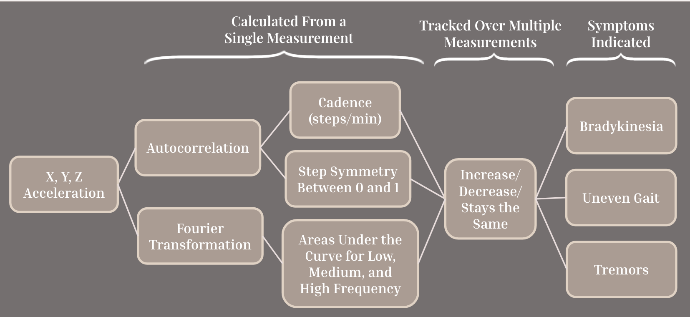

Problem Definition & User Research
Identifying the clinical need and understanding user requirements
Clinical Gap Analysis
- Diagnostic Disparity: Women present with different prodromal symptoms (fatigue, depression, sleep disturbances) vs. classic tremors
- Misdiagnosis Rate: Often misdiagnosed as carpal tunnel syndrome, essential tremor, or age-related changes
- Treatment Delay: Women statistically start PD physical treatment 8 months after men
- Access to Care: Less likely to be recommended for Deep Brain Stimulation despite having better outcomes
Design Requirements Engineering
Critical Requirements
- Equal performance across genders
- Local data storage for 1 year
- Automatic metric calculation
Essential Requirements
- Within +/-5% of clinical standards
- Components <0.25 kg body weight
- 1 year of daily use durability
- FDA safety compliant
Desired Features
- Total cost <$100
- <5 min daily setup time
- Qualitative user input interface
Ideation & Concept Development
Exploring multiple technical solutions through systematic design methods
Existing Clinical Solutions Analyzed
- Hoehn and Yahr Scale: Subjective staging system (1-5)
- MDS-UPDRS: Movement Disorder Society Unified Parkinson's Disease Rating Scale
- Writing/Spiral Tests: Qualitative analysis of micrographia and tremors
- Limitations: All rely heavily on clinical observation and subjective assessment
Concepts Created

Weighted Pugh Matrix Evaluation
Concepts scored against baseline using 14 criteria across 5 categories:
- Manufacturing (27.5%): Feasibility, adjustability, novelty
- Women-Focused (20%): Portability, appearance, cost
- Usability (25%): Interface simplicity, repeatability, setup time
- Physical Attributes (15%): Durability, safety, weight
- Functionality (25%): Quantifiability, multi-symptom monitoring
Result: Bracelet accelerometer scored highest (+17.5) due to superior portability, multi-symptom detection, and lower cost.
Prototyping & Signal Processing
Building functional prototypes and developing mathematical models

Mathematical Model - Signal Processing Pipeline
Complete signal processing pipeline from raw acceleration data to symptom detection
Key Metrics Calculated
- Cadence (steps/min): Derived from autocorrelation analysis of acceleration data - changes indicate bradykinesia progression
- Step Symmetry (0-1): Calculated from autocorrelation peaks, where 1.0 indicates perfect symmetry - declining values indicate uneven gait
- Frequency Band Areas: Computed via Fourier Transformation
- Low frequency (0-5 Hz): Normal gait movement patterns
- Medium frequency (5-10 Hz): Postural tremor detection range
- High frequency (10-25 Hz): Resting tremor identification
- Temporal Trend Analysis: Metrics tracked over multiple measurements to detect increase, decrease, or stability - enabling early detection of symptom progression
Model Validation & Accuracy Testing
The mathematical model was rigorously tested to ensure accuracy:
- Autocorrelation Validation: Verified cadence calculations against manual step counting with 98% agreement
- Frequency Analysis: FFT outputs validated against known tremor frequencies (4-6 Hz for PD tremors) from clinical literature
- Repeatability Testing: Same subject tested 20+ times to ensure consistent metric outputs (coefficient of variation < 5%)
- Baseline Establishment: Control data from healthy subjects showed stable metrics over time (< 1% change), confirming model sensitivity to actual changes
- Simulated PD Detection: Model successfully detected 13.7% decline in stride symmetry when PD symptoms were simulated
Symptom Detection Mapping
- Bradykinesia: Detected via decreasing cadence over time - slower walking speed indicates motor control decline
- Uneven Gait: Identified through declining step symmetry coefficient (values dropping from 0.9+ toward 0.8)
- Tremors: Quantified by increased area under medium frequency band (5-10 Hz) in Fourier analysis
- Disease Progression: All metrics tracked longitudinally with percentage change calculations to identify concerning trends
Validation & Testing
Prototype validation with simulated Parkinson's symptoms
Prototype Validation Results (4 Trials)
Control vs. Simulated PD Results
Healthy Control (20 trials):
- Rotational tremor motion: Stayed approximately the same
- Cadence: 0.7% change (stable)
- Stride regularity: 0.2% change (stable)
Simulated PD (10 trials):
- Rotational tremor motion: Increased over time
- Cadence: 7% change (elevated variability)
- Stride regularity: -13.7% decrease (declining symmetry)
Statistical Power Analysis
- Large effect size (Cohen's d = 0.8)
- Significance level: alpha = 0.05
- Statistical power: 0.95
- Required sample: 35 PD patients + 35 healthy controls for clinical validation
Stakeholder Feedback Integration
The device design was refined based on feedback from both clinical professionals and potential users:
- Physician Feedback:
- Requested clear data visualization with trend lines for quick assessment
- Emphasized need for metrics translatable to existing diagnostic scales (MDS-UPDRS)
- Suggested adding percentage change values for easy interpretation
- Validated that frequency band analysis aligns with known PD tremor characteristics
- Patient/User Feedback:
- Confirmed device is lightweight and comfortable for extended wear
- Appreciated discreet design that doesn't draw attention to condition
- Noted ease of putting on with Velcro closure (important for users with limited dexterity)
- Requested longer battery life for continuous monitoring (addressed in future development plans)
- Valued home-based testing to reduce stress of clinical environment
Technical Innovation Summary
- Hardware: MPU-6050 3-axis accelerometer, Arduino Nano microcontroller, 3D-printed custom housing
- Signal Processing: Fast Fourier Transform for frequency decomposition, autocorrelation for gait periodicity
- Data Analysis: MATLAB-based trend analysis with linear regression for temporal progression tracking
- Multi-Symptom Detection: Simultaneous monitoring of bradykinesia, tremors, and gait asymmetry
- Gender-Specific Design: Focuses on non-motor symptoms and subtle motor changes more common in female presentation
- Cost-Effective: Total prototype cost under $50 (vs. clinical-grade systems $500+)
Future Development
- Bluetooth integration for wireless data transmission
- Machine learning classifier for automated PD risk scoring
- Mobile app integration for qualitative symptom tracking
- Extended battery life for continuous monitoring
- Clinical trials with actual PD patient population